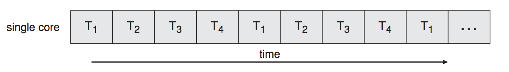

*More on Threads
We got a brief introduction to working with threads and learned how to create a new thread, how one exits (returning a value or not) and how to collect a value from it. Let’s take a moment to consider cancellation.
Thread cancellation is exactly what it sounds like: a running thread will be terminated before it has finished its work. Once the user presses the cancel button on the file upload, we want to stop the upload task that was in progress. The thread that we are going to cancel is called the target (because we shoot targets, I guess) and there are two ways a thread might get cancelled :
Asynchronous Cancellation: One thread immediately terminates the target.
Deferred Cancellation: The target is informed that it is cancelled; the target is responsible for checking regularly if it is terminated, allowing it to clean itself up properly.
The pthread attributes can be used to set the cancellation type before it is created. A thread can declare its own cancellation type through the use of the function:
The first parameter is the new state we’d like this thread to take on, which would be one of the constants PTHREAD_CANCEL_DEFERRED or PTHREAD_CANCEL_ASYNCHRONOUS. The second parameter will be updated to point to what the previous state was (although we might not care).
In deferred cancellation, a thread is responsible for checking if it has been cancelled, and if so, and stopping its activity and cleaning up (closing open files, etc.) before it terminates. It’s possible, though generally poor programming practice (and very difficult), to never check for cancellation.
Given that a thread can effectively ignore a cancellation if it is the deferred cancellation type, why would we ever choose that over asynchronous cancellation? Suppose the thread we are cancelling has some resources. If the thread is terminated in a disorderly fashion, the operating system may not reclaim all resources from that thread. Thus a resource may appear to be in use even though it is not, denying that resource to other threads and processes that may want to use it .
The pthread command to cancel a thread is pthread_cancel and it takes one parameter (the thread identifier). By default, a pthread is set up for deferred cancellation. In the function that runs as a thread, to check if the thread has been cancelled, the function call is pthread_testcancel which takes no parameters.
Suppose your background task is to upload a bunch of files, consecutively. It is good programming practice to check pthread_testcancel at the start or end of each iteration of the loop, and if cancellation has been signalled, clean up open files and network connections, and then pthread_exit. Thus, if the thread has been told to cancel, it will do as it is told within a fairly short period of time.
It is noteworthy that a large number of functions are cancellation points; that is, the POSIX specification requires there is an implicit check for cancellation when calling one of those functions. There is an even larger number of functions that are “potential cancellation points”, where the specification says that they could be cancellation points (but maybe aren’t). You’ll have to check the spec to see if that is the case for a specific function if there is a scenario where unexpected cancellation is a problem.
With the presence of cancellation points or asynchronous cancellation, sometimes a thread can be terminated before it has cleaned up some resources. This is undesirable. One way that we can guard against this is to register cleanup handlers for that thread. If, say, our thread allocated some memory, it would be wise to register a cleanup handler that deallocates that memory in case the thread should die unceremoniously. The function signatures are:
pthread_cleanup_push( void (*routine)(void*), void *argument ); /* Register cleanup handler, with argument */
pthread_cleanup_pop( int execute ); /* Run if execute is non-zero */ To add a cleanup handler, the push function is used. Its two arguments are the function that is supposed to run, and a pointer to the argument that cleanup function will need.
The push function always needs to be paired with the pop function at the same level in your program (where level is defined by the curly braces). You should think of them as being like the opening curly brace at the start of a statement and the closing curly brace at the end; they have to be correctly matched up. The pop function takes one argument: whether it should run or not. If the thread is cancelled, the cleanup function will run; if it continues to the pop function, then you get to choose whether it runs or not.
Consider the following code:
void* do_work( void* argument ) {
struct job * j = malloc( sizeof( struct job ) );
/* Do something useful with this structure */
/* Actual work to do not shown */
free( j );
pthread_exit( NULL );Suppose that the thread is cancelled during the block operating on j and it is set up for asynchronous cancellation. This means that the code will never get to the free() call, which means that the memory allocated at the beginning is leaked! We can remedy this with application of a cleanup handler:
void cleanup( void* mem ) {
free( mem );
}
void* do_work( void* argument ) {
struct job * j = malloc( sizeof( struct job ) );
pthread_cleanup_push( cleanup, j );
/* Do something useful with this structure */
/* Actual work to do not shown */
free( j );
pthread_cleanup_pop( 0 ); /* Don't run */
pthread_exit( NULL );And you may note that you could actually save a line of code by removing the free() call and changing the argument to the pop function to be 1: this means the cleanup function runs and it does free the memory allocated. Nice!
The earlier example used the return value of a thread. Sometimes, of course, we don’t want to do that. One of the advantages of the use of threads is that data can be passed between threads using memory directly. In this case, because there is no return value that we care about, we can use NULL in the call to join. This example also shows how to initialize and the attributes, although it doesn’t override any of the defaults.
#include <pthread.h>
#include <stdio.h>
int sum; /* Shared Data */
void *runner(void *param);
int main( int argc, char **argv ) {
pthread_t tid; /* the thread identifier */
pthread_attr_t attr; /* set of thread attributes */
if ( argc != 2 ) {
fprintf(stderr,"usage: %s <integer value>\n", argv[0]);
return -1;
}
if ( atoi( argv[1] ) < 0 ) {
fprintf(stderr, "%d must be >= 0\n", atoi(argv[1]));
return -1;
}
/* set the default attributes */
pthread_attr_init( &attr );
/* create the thread */
pthread_create( &tid, &attr, runner, argv[1] );
pthread_join( tid, NULL );
printf( "sum = %d\n", sum );
pthread_exit( NULL );
}
void *runner( void *param ) {
int upper = atoi( param );
sum = 0;
for ( int i = 1; i <= upper; i++ ) {
sum += i;
}
pthread_exit( 0 );
}In this example, both threads are sharing the global variable sum. We have some form of co-ordination here because the parent thread will join the newly-spawned thread (i.e., wait until it is finished) before it tries to print out the value. If it did not join the spawned thread, the parent thread would print out the sum early.
Let’s do a different take on that program:
#include <pthread.h>
#include <stdio.h>
#include <stdlib.h>
int sum = 0;
void* runner( void *param ) {
int upper = atoi( param );
for (int i = 1; i <= upper; i++ ) {
sum += i;
}
pthread_exit( 0 );
}
int main( int argc, char** argv ) {
pthread_t tid[3];
if ( argc != 2 ) {
printf("An integer value is required as an argument.\n");
return -1;
}
if ( atoi( argv[1]) < 0 ) {
printf( "%d must be >= 0.\n", atoi(argv[1]) );
}
for ( int i = 0; i < 3; ++i ) {
pthread_create( &tid[i], NULL, runner, argv[1] );
}
for ( int j = 0; j < 3; ++j ) {
pthread_join( tid[j], NULL );
}
printf( "sum = %d.\n", sum );
pthread_exit( 0 );
}What’s going wrong here? For very small values of the argument, nothing, but for a large number we get some strange and inconsistent results. Why? There are three threads that are modifying sum. And, it turns out, that this is a problem – if threads are trying to write to the same place at the same time, things can go wrong. But what does “at the same time” mean in the context of a program? To understand that, we need to think about how the hardware behaves and how the OS schedules the work.
Not that long ago, a typical computer had one processor with one core. It could accordingly do exactly one thing at a time. When we say there is one processor, it’s one general purpose processor that executes user processes. There may be additional special-purpose processors in the system (e.g., a RAID controller1) but there is only one general purpose processor so we call it a uniprocessor system.
Now, desktops, laptops, and even cell phones are almost certainly using multi-core processors. A quad-core processor may be executing four different instructions from four different threads at the same time. In theory, multiple processors may mean that we can get more work done in the same amount of (wall clock) time, but this is not a guarantee.
Terminology note: we often refer to a logical processing unit as a core. The term CPU may refer to a physical chip that contains one or more logical processing units. As far as the operating system is concerned, it does not much matter if a system has four cores in four physical chips or four cores in one chip; either way, there are four units that can execute instructions.
If there is exactly one process with one thread running in the system, then it does not matter how many cores are available: at most one core will be used to execute this task. If there are multiple processes, each process can execute on a different core. But what do we do if there are more processes and threads than available cores? We can hope that the processes get blocked frequently enough and long enough so that all processes get to run, but this is not something we can count on.
Our solution is that the CPU should switch between the different tasks via a procedure we call time slicing. So thread 1 would execute for a designated period, such as 20 ms, then thread 2 for 20 ms, then thread 3 for 20 ms, then back to thread 1 for 20 ms. To the user, it seems like threads 1, 2, and 3 are being executed in parallel, because 20 ms is fast enough that the user does not notice the difference.

Execution of different Threads T_{1} through T_{4} on a single core .
Time slicing of execution will still occur, if necessary. Continuing our example, if there are four threads running on a dual-core system, time slicing is necessary to run all those programs.
Execution of different Threads T_{1} through T_{4} on two cores .
No doubt it has occurred to you that if there are multiple threads running at the same time, it means a task will get completed faster, right? Well... maybe. It depends a lot on what the task is. There is some overhead involved in splitting a task up and re-combining the results (if necessary), but in most circumstances the overhead is negligible compared to the amount of time working on the task.
If a task can be fully parallelized, it means the task can be split up in such a way that adding a second executing thread would double the speed of execution. Imagine painting an apartment. It would take one person 12 hours to paint the whole apartment and two people could complete the job in 6 hours. The pattern continues: three people can complete the job in 4 hours, four people in 3 hours, et cetera. This is the ideal, but in the real world there will be a limit to how many additional workers you can add and continue to have this speedup characteristic. At some point, the overhead of adding more threads is no longer negligible. In theory, you could hire 720 painters and finish the job in 1 minute, but at some point you cannot physically fit any more painters into the room.
If a task can be partially parallelized, it means the task can be divided, but doubling the workers doesn’t result in completing the job in half the time. Two chefs working together in a kitchen might take 75% of the time it would take one chef to cook a meal. Adding the extra worker to the kitchen improved the speed at which food was prepared, but it’s not doubled. The chefs can work independently some of the time, but at other times one has to wait for the other; the sauce cannot be put on the chicken until the chicken comes out of the oven.
If a task cannot be parallelized at all, then no amount of extra workers will speed it up. Some tasks can only be done sequentially. You can’t cook the steak in one minute by putting it in five ovens (this makes the chef very mad).
Let us consider an example from : Suppose we have a task that can be executed in 5 s and this task contains a loop that can be parallelized. Let us also say initialization and recombination code in this routine requires 400 ms. So with one processor executing, it would take about 4.6 s to execute the loop. If we split it up and execute on two processors it will take about 2.3 s to execute the loop. Add to that the setup and cleanup time of 0.4 s and we get a total time of 2.7 s. Completing the task in 2.7 s rather than 5 s represents a speedup of about 46%.
A smart fellow by the name of Gene Amdahl came up with a formula for the general case of how much faster a task can be completed based on how many processors we have available. Let us define S as the portion of the application that must be performed serially and N as the number of processing cores available. Amdahl’s Law:
speedup \leq \frac{1}{S + \frac{1-S}{N}}
This is a math formula, after all, and you can do things like take the limit as N approaches infinity and you will find the speedup converges to \frac{1}{S}. So the limiting factor on how much additional processors help is, of course, the size of the S term in the equation. That squares well with our intuition about how this should work. If the task is completely sequential (cannot be parallelized at all), we cannot make it faster and \frac{1}{1 + 0} will produce a maximum speedup of 1; or in other words... no speedup at all.
Applying this formula to the example from earlier, we get the following run times:
| Processors | Run Time (s) |
|---|---|
| 1 | 5 |
| 2 | 2.7 |
| 4 | 1.55 |
| 8 | 0.975 |
| 16 | 0.6875 |
| 32 | 0.54375 |
| 64 | 0.471875 |
| 128 | 0.4359375 |
There are two observations from this data immediately. The first is that we get diminishing returns as we add more processors. Going from 1 to 2 processors reduced the runtime dramatically, but going from 64 to 128 reduced the run time only a very small amount. The second is that as we continue to add more processors we are converging on a run time of 0.4 s, which fits our expectations of what would happen with infinite processors. The serial part will take 0.4 s no matter what, and with infinite processors the parallel part would be (effectively) instant. Again, applying the formula, the most we could speed up this code is by a factor of \frac{5}{0.4}\approx 12.5. It is not possible to do better than this. In reality we will never be able to equal the limit either, because nobody has infinite processors available, considering that would take an infinite amount of space and an infinite amount of money...
Recall from data structures and algorithms the concept of merge sort. This is a divide-and-conquer algorithm like binary search. Split the array of values up into smaller pieces, sort those, and then merge the smaller pieces together to have sorted data. To get this done, we might have many threads sorting and one thread merging the sorted lists together into a larger, sorted list. Visually, this looks like:
Multithreaded sorting .
The graphics card seems like a more obvious example, but these days there are various programs that can make use of the powerful GPU to do general purpose computation.↩